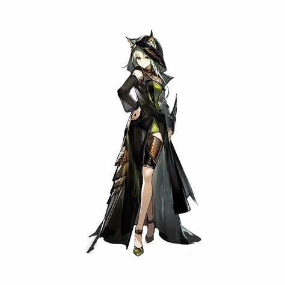

| 返回主页 |
阿米娅， 游戏《明日方舟》中的角色 ，5星干员，罗德岛的公开领袖。 出生于雷姆必拓，卡特斯、奇美拉 族，属罗德岛阵营，职业为近卫。 在内部拥有最高执行权，深受大家信任。 特点是远程位、输出，攻击、 造成法术伤害。 阿米娅带领着罗德岛，为了 感染者 的未来，为了让这片大地挣脱矿石病的阴霾而 不懈努力 。 |
|
陈，龙门高级警司，龙门近卫局特别督察组组长，毕业于维多利亚皇家近卫学校，成绩优异，表现突 出。 在龙门近卫局供职期间，力主取缔龙门境内非法活动，对抗暴力犯罪和有组织犯罪，追缉武装逃犯 与国际重犯等行动，并取得多项重大成果。 现作为特别人员协助罗德岛行动，并为现场提供战术指挥支 援。 |
|
|  | 凯尔希，罗德岛医疗项目领头人。 在冶金工业、社会学、源石技艺、 考古学、历史系谱学、经济、 植物学、地质学等领域皆拥有渊博学识。 于罗德岛部分行动中作为医务人员提供医学理论协助与应 急医疗器械。 |